S60 5th Edition SDK
Example Applications Guide |
Animation Example
1. About this Example
3. Architecture
2. User interface
4. Design and Implementation
This tutorial explains the Animation application example, which is a simple, but complete, application demonstrating the use of the animation client/server architecture. The structure of the tutorial is based on the architecture of the application, which is shown in the UML component diagram below.
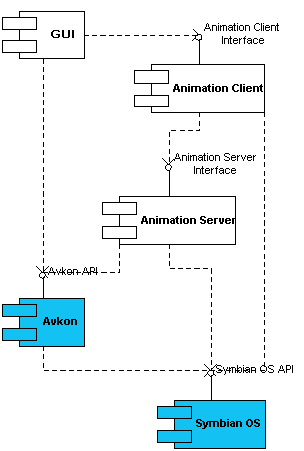
The tutorial starts by listing the pre-requisites the user should know before starting this example, and describes how to build and run the example. The documentation goes on to discuss how to implement an animation client/server, which is split into the following sections:
- The application GUI.
- The animation client.
- The animation server.
The example describes the basic principles of animation. It goes on to detail the design and implementation of the GUI and the animation client. Two different possible animation server implementations are described, one being more complicated, but more flexible, than the other.
In the example application a small square moves continuously across the screen at a constant speed. Whenever it reaches the edge of the window, it bounces off in another direction.
The Options menu presents the user with two options, as follows:
- Select Reset to return the square back to the top left corner of the display.
- Select Exit at any time, to exit the application.
This example exists as a complete application, and has the standard Symbian OS application architecture employing the Application, Document, UI, and View classes. The example makes use of several other Symbian OS concepts which the reader should be aware of before attempting to understand this example. These are:
- Client/server architecture.
- Familiarity with the Window Server.
- How to draw to a graphics context.
When the application starts up, the following screen appears.
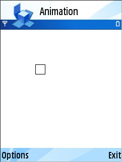
The small square moves continuously across the screen at a constant speed. Whenever it reaches the edge of the window, it bounces off in another direction.
The Options menu presents the user with two options, as follows:
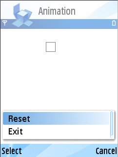
- Select Reset to return the square back to the top left corner of the display.
- Select Exit at any time, to exit the application.
The application is split into a client and a server, with the server doing the work of creating, controlling and deleting animated images directly, in the same high priority process as the Window Server. The client simply acts as a way for objects which are not in the same address space and thread as the Window Server to create and control images via the server. Redrawing images can be controlled by the Window Server, but this only allows a limited choice of redraw rates. Using a timer active object provides a wider choice of redraw rates.
This section starts by giving an overview of the process required to animate an image. It then details the design and implementation of each of the following three components required to animate an image: the application GUI, the animation client, and the animation server.
The image of the bouncing square is made to appear to move by repeatedly being drawn, erased and redrawn at regularly spaced positions on the screen, at regular time intervals. The frequency at which redraws are done is called the redraw rate. Redraws could be invoked under the direct control of application code, in the form of an active object regulated by a timer. However, because this would run on the client-side of the Window Server, it would suffer from the (relatively) lower priority of the client thread. Also, active objects are not pre-emptively scheduled. This means that a window update might be delayed or blocked altogether by another, already running, client-side active object. This would result in a varying redraw rate, and make the animation spasmodic, or stop it completely for a time.
To achieve smoother animation, the drawing process can be controlled by the Window Server itself, in conjunction with some special application objects called the Animation Server. The Animation Server runs in the same thread as the Window Server. It draws, erases and redraws individual still images, one for each step of the animation, at intervals determined by the Window Server. This is illustrated in the UML sequence diagram below.
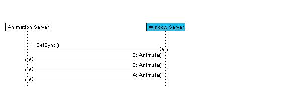
This is the first animation scenario, an animation server with restricted redraw rate. The Window Server calls the Animate function on the Animation Server at regular intervals. The Animate function can be programmed to erase the existing image and draw the next one in the animation sequence. The redraw rate is set by a call to the SetSync function on the Window Server, just after the Animation Server is created.
However, the Window Server only allows a limited choice of redraw rates. The maximum rate is just two Animate calls per second. If a faster or non-standard redraw rate is required, a more refined mechanism must be used. One such refinement is illustrated by the UML sequence diagram below.
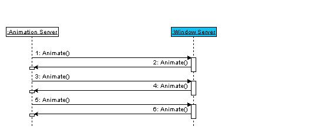
This is the second animation scenario, an animation server with less restricted redraw rate. Here the Animation Server has a built-in timer, which periodically invokes a function in the Animation Server which calls the Animate function on the Window Server. This, in turn, calls the Animate function on the Animation Server, which erases the existing image and draws the next one in the animation sequence. The process repeats at the rate determined by the Animation Server's timer period. This is the animation mechanism used in this example application.
This section describes a typical use case scenario for the Animation application. The scenario is as follows:
- A GUI is Constructed. This, in turn, creates an animation client DLL object and image commander object. These objects create an animation server DLL object, which starts the square bouncing around the screen.
- The user issues a Reset command, and the square is set back to the top left corner.
- The user closes the application, and all the animation client and server objects are closed and destroyed.
GUI Construction is illustrated in the sequence diagram below.
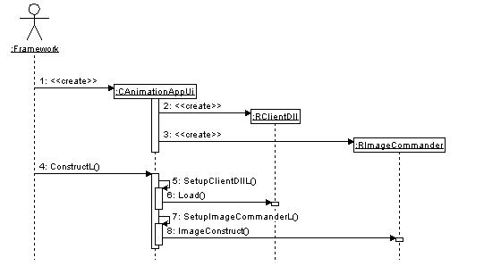
- The framework creates the GUI, which results in a call to the class Constructor.
- Construction of the GUI causes the RClientDll object to be Constructed.
- Construction of the GUI causes the RImageCommander object to be Constructed. Both RClientDll and RImageCommander classes are R-Type classes, which means they need special consideration when being Constructed and deleted. More information on how to Construct/destroy R-Type class objects is included in section 4.5 and section 4.6.
- The framework calls the GUI ConstructL function to complete Construction.
- SetUpClientDLL is called.
- This, in turn, completes the Construction of the RClientDll object. Load is called on the RClientDll object and passed the name of the animation server to be loaded.
- SetupImageCommander is called.
- Calling SetupImageCommanderL results in a call to ImageConstruct upon the RImageCommander object, and completes Construction of the server-side image that will be animated.
The next diagram illustrates the events that occur when the user selects Reset from the Options menu.
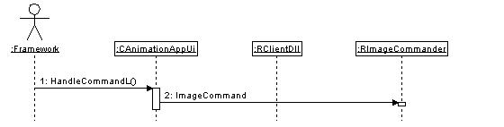
- The user interacts with the application, causing the HandleCommandL function to be called.
- If Reset has been selected, the GUI informs the client by calling the ImageCommand function.
The final sequence diagram illustrates what occurs when the GUI objects are destroyed.
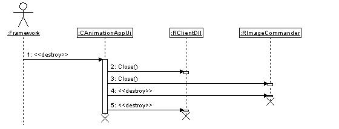
- The user closes the application.
- The GUI destructor calls the Close function of the RClientDll object.
- The GUI destructor calls the Close function of the RImageCommander object.
- The RImageCommander object is destroyed.
- The RClientDll object is destroyed.
The previous section has shown how the GUI manipulates the RClientDll and RImageCommander objects. This section describes how these classes are implemented in terms of the animation server. RClientDll and RImageCommander provide client-side interfaces to the animation server, which allow the user-interface code to (indirectly) control images on the server-side. The animation server itself is described later.
An instance of RClientDll is an object used to load and destroy the animation server. An instance of RImageCommander is an object which can be used to create, via the animation server, a new animated image. It can then be used to dynamically control this image's behaviour. Typically, each different kind of animated image requires an instance of RImageCommander to create, manipulate and destroy it. RImageCommander instances must be created after the RClientDll object.
The RClientDll and RImageCommander classes derive much of their functionality from the Symbian OS classes RAnimDll and RAnim respectively. The UML class diagram below shows the relationships between the animation client package classes and the Symbian OS classes.
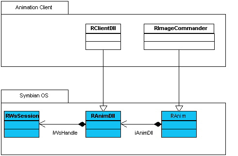
The RClientDll class is derived from the Symbian OS RAnimDll base class. Every instance of RClientDll is linked to a Window Server session, that is an instance of class RWsSession. This is the session that the animation server will interact with when the server is loaded.
The RImageCommander class is derived from the Symbian OS RAnim class. Every instance of RImageCommander is attached to an instance of a RClientDll class. The link is made when the RImageCommander object is created.
RImageCommander derives three important functions from RAnim:
The Construct function causes a new animation image to be created by the animation server.
The Command function passes a 'command', in the form of an integer operation code, to the animation server. The animation server can be programmed to interpret this in whatever way is appropriate. Typically, a command will relate to dynamically controlling the animated image's behaviour.
The Command function does not return a value, and is a buffered operation. The fact that it does not return a value means that it should only be used for actions that cannot leave or fail, because should the action fail, there is no way for the server to signal this to the client. The fact that the action is buffered means that completion of the action is asynchronous to the request. This means a latency will be introduced between the request and an action being performed.
There is another RAnim function, CommandReply, which is similar to Command but it does return a value, and is unbuffered. As this function returns a value, it may be used for actions that can fail. Through the return value, the client-side can be informed of any failures, and respond accordingly. The fact that the action is unbuffered means that it will generally not return until the requested action has been completed. For this reason, it is recommended that any actions performed are relatively short.
Note that the Command and CommandReply functions of the RAnim class are protected, therefore anything deriving from this will need to publish a public function to make these functions publicly accessible.
The Close function requests the animation server free all the resources belonging to an object.
This section describes a simple use case scenario for the Animation Client. It demonstrates the Animation Client objects being:
- Constructed
- Used to load and start the animation server, which starts the bouncing square animation
- Resetting the animation, so that the bouncing square jumps back to the top-left corner and moves off again
- Closed
Construction of an animation client is shown in the sequence diagram below.
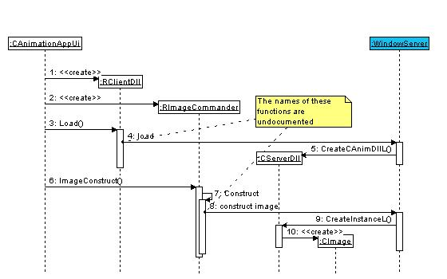
- An animation client DLL object is created. A Window Server session is passed to it, so that the DLL is able to attach an animation server to this Window Server session.
- An instance of RImageCommander is Constructed. The Constructor is passed a reference to an animation client DLL. In this example this is the RClientDll object created by (1).
- To load a server-side animation DLL, Load is called upon the RClientDll object. This is passed the filename of the animation server DLL to load. Note that it is not necessary to put the DLL file extension on this filename. The location of the animation server DLL file may be different in the emulator and target builds.
- A Window Server is loaded.
- The Window Server creates an animation DLL object.
- The client-side RImageCommander object is used to create an instance of the server-side CImage class. This is achieved by calling ImageConstruct.
- The RImageCommander calls RAnim::Construct.
- The RImageCommander constructs the image.
- This causes the Window Server to call CServerDll::CreateInstanceL, and passes it an argument indicating what type of image should be created. A single instance of CServerDll may be used to create multiple animation images.
- An instance of CImage is then Constructed.
Having successfully Constructed a server-side image, the user may wish to send commands to it. In this example, the Reset command is sent to restart animation at the top left of the display. This is achieved using the ImageCommand function, and is shown in the sequence diagram below.
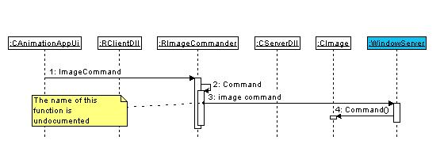
- The user selects Reset from the Options menu.
- The RImageCommander calls RAnim::Command.
- The RImageCommander then sends a message to the Window Server.
- Sometime later the Window Server calls the Command function of the server-side CImage class, and passes an argument that indicates the type of command required. For this example this is set to KAnimationReset, which resets the animation.
The final stage is when the image object needs to be destroyed and the animation server closed down. This is done by calling Close operations on the RImageCommander and RClientDll objects. The correct sequence is shown in the diagram below.
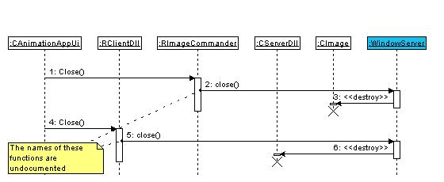
- RImageCommander::Close is called.
- The RImageCommander instructs the Window Server to destroy the relevant server-side CImage object.
- The Window Server destroys the relevant server-side CImage object.
- Once all the server-side images has been destroyed, the server-side DLL can be unloaded. This is achieved by calling RClientDll::Close.
- The RClientDll instructs the Window Server to unload and destroy the server-side animation DLL.
- The Window Server unloads and destroys the server-side animation DLL.
This section describes two possible implementations of the animation server. The difference between them is the mechanism used to determine when each individual image in the animation sequence is drawn. The two implementations use, respectively:
The first implementation has the restriction that the image can't be redrawn at a rate greater than twice per second, the rate set by a Window Server limitation. The second implementation is more complicated than the first, but has the advantage that the upper limit to the redraw rate is higher.
Both implementations incorporate the two classes, CServerDll and CImage. The second implementation has two extra timer classes, CTimeoutTimer and MTimeoutNotify.
The classes necessary to create an animation server are summarised in the UML class diagram below.
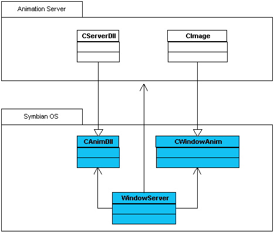
An instance of CImage corresponds to a specific animated image on the screen. In this example, it calculates the position for the bouncing square, and draws it.
An instance of CServerDll is a 'factory' object, which creates a new instance of CImage. The two classes have to present a specific interface to the Window Server, which they derive from two Symbian OS classes CAnimDll and CAnim. The CreateCAnimDllL function is used to create the CServerDll object.
There are four main tasks that have to be performed for the server-side animation to work. These are:
- Load and start the animation server.
- Start the bouncing square animation.
- Reset the running animation, so that the bouncing square jumps back to the top-left corner, and moves off again.
- Close the animation and the animation server.
Loading and Constructing the animation server has already been discussed in The animation client section. This section focuses on what occurs once the animation server has been Constructed. The diagram below shows the events that occur from the point where the CImage object is created, to when the first call to Animate is made.
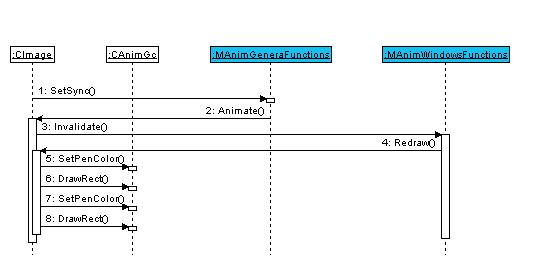
- SetSync is called on the Window Server. This specifies the redraw rate of the image.
- After a specified time, determined by the redraw rate, the Window Server calls the Animate function on the CImage object. Animate calculates the position of the bouncing square.
- It then calls the Invalidate function, which informs the Window Server that the display needs to be updated.
- The Window Server calls Redraw on all the animated objects that have been invalidated (in this case, there is only the CImage object).
- The pen colour is set to white.
- The Redraw function overwrites the last animation position with a white rectangle. This effectively erases the previous image.
- The pen colour is set to black.
- A rectangle is drawn at the new position calculated by (2).
Steps 2 - 8 are repeated at the Redraw rate. With the limitations of the Window Server, this occurs a maximum rate of twice a second.
The second implementation, where there is a higher upper limit to the redraw rate, incorporates some extra member functions and variables in CImage, and two extra classes, CTimeoutTimer and MTimeoutNotify. The UML class diagram below shows the relationships between the CAnimDll and CImage classes and various Symbian OS classes, and the timer classes.
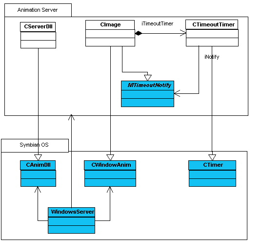
An instance of CTimeoutTimer is an active object, which can be programmed to timeout after a specific interval. When it does time out, it calls the TimedOut function on an 'observer' object. The timer observer must be registered with the timer when the timer is created. The object must also be an instance of a class derived from the mixin class MTimeoutNotify.
Here, the registered observer is the CImage object, and so the timer calls TimedOut on this. This, in turn calls Animate and puts a Redraw into effect. The process is illustrated in more detail in the UML sequence diagram below.
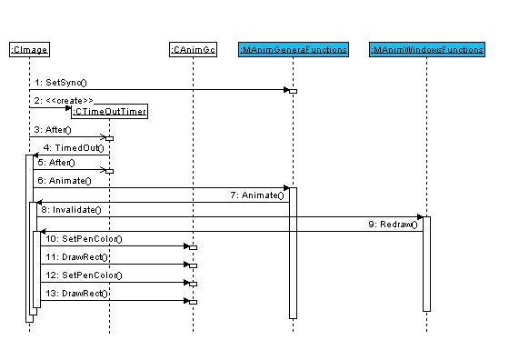
- The CImage object calls SetSync on the Window Server, with an argument ESyncNone. ESyncNone specifies that the Window Server should not initiate Animate calls on CImage.
- The CImage object creates the CTimeoutTimer object.
- It then calls the After function on it, which instructs it to call TimedOut on CImage after a set period of time has elapsed.
- After the set period of time has elapsed, the timer calls TimedOut on CImage.
- The CImage calls the After function, to schedule the next redraw period.
- CImage calls the Window Server's Animate function.
- This results in CImage::Animate being called. Note that it is not possible to call CImage::Animate directly, as the Window Server needs to perform some initialisation first.
- Animate first calculates the position of the bouncing square. It then calls the animation Invalidate function, which informs the Window Server that the display needs to be updated.
- The Window Server calls Redraw on all the animated objects that have been invalidated (in this case there is only the CImage object).
- The pen colour is set to white.
- The Redraw function overwrites the last animation position with a white rectangle. This effectively erases the previous image.
- The pen colour is set to black.
- A rectangle is drawn at the new position, calculated by (2).
After the set period of time has elapsed, the timer calls TimedOut on CImage. The whole redraw process is then repeated. By changing the timer period, it is possible to alter how often the square is redrawn. Care should be exercised, however, because if the timer period is too short then animation can become jerky as the image is moved. This is because there is not sufficient time to draw the new position before the square is moved again. Note that the timer resolutions for the emulator and target builds are different: 1/10 of a second for the emulator, and 1/64 of a second for the target. Also, the target is able to cope with a much lower timer period (i.e. more frequent redraws) than the emulator before it starts to have trouble drawing the image.
One slightly unusual feature of the Animation application is that the animation client DLL and image commander classes are both R-Type classes. This means that the objects these classes control are actually owned elsewhere, in this case by the Window Server. Because these classes are R-Types, their instances are Constructed automatically by their containing object's Constructor. However, the Constructors need to take certain parameters, in order to Construct correctly. The passing of these parameters to the Constructor is achieved by explicitly calling the R-Type class's Constructor in the owning class's Constructor list. An example of this is shown when the GUI application UI Constructs the animation client.
The Constructor performs the following tasks:
- Call the base class Constructor for the UI.
- Call the Constructor for the animation client DLL (RAnimDll derived) class, passing it a reference to a Window Server session.
- Call the Constructor for the animation client image commander (RAnim derived) class, passing it a reference to the animation client DLL object Constructed in the previous step.
These objects need to be Constructed in this manner to avoid calling the default Constructors, which would not initialise the objects correctly. The order in which the two R Class objects are Constructed is very important, as Construction of the image commander takes the client DLL as a parameter. However, the order of Construction is defined by the order of the member variables within the class definition, not the Constructor initialisation list. Therefore, the class definition must declare these variables in the correct order, for the Construction to work correctly.
Because the Animation Client classes are R-Types, they are automatically destroyed by the class that owns them, and there is no need to destroy them explicitly in the destructor. It is necessary to free whatever resources they might be using, however. This is done by calling the Close function on each of the R-Type objects, as performed by the UI's destructor.
Each Symbian OS application has an associated MMP file. The MMP file defines such things as which source files are to be compiled, which libraries to be linked, and so on. To create an animation server DLL, it is necessary to specify the target type and UID in the MMP. These should be set to the values shown below.
TARGETTYPE ani
UID 0x10003b22
|
© Nokia 2009 |

|